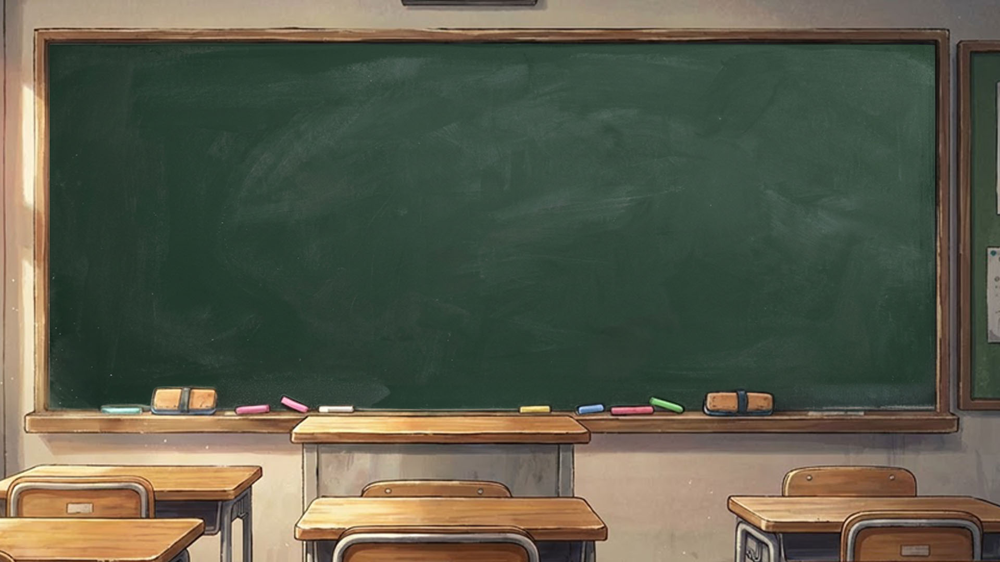
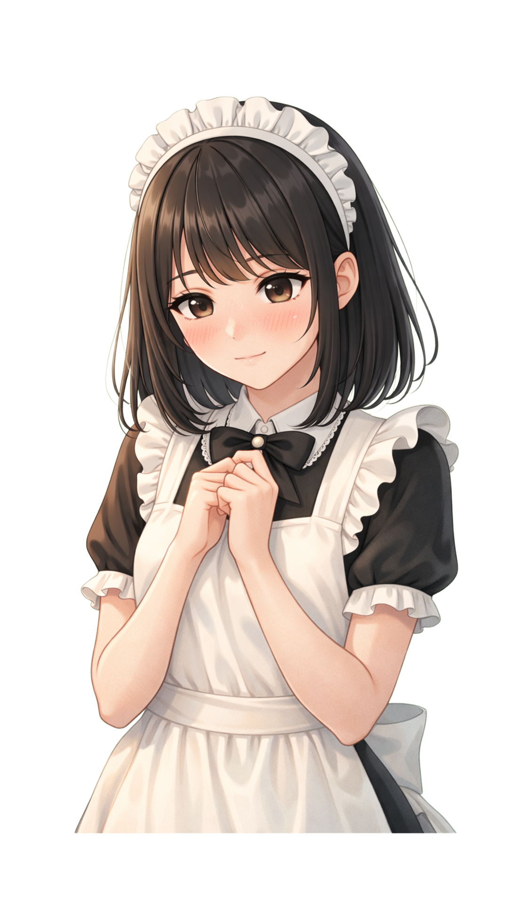
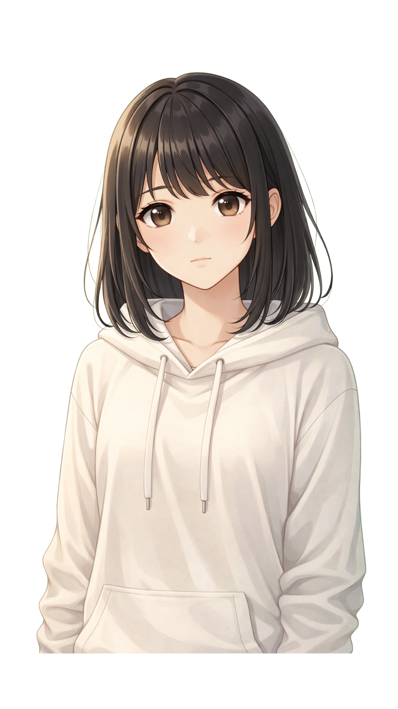
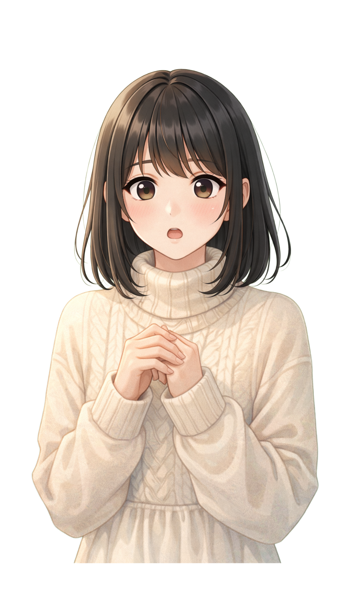
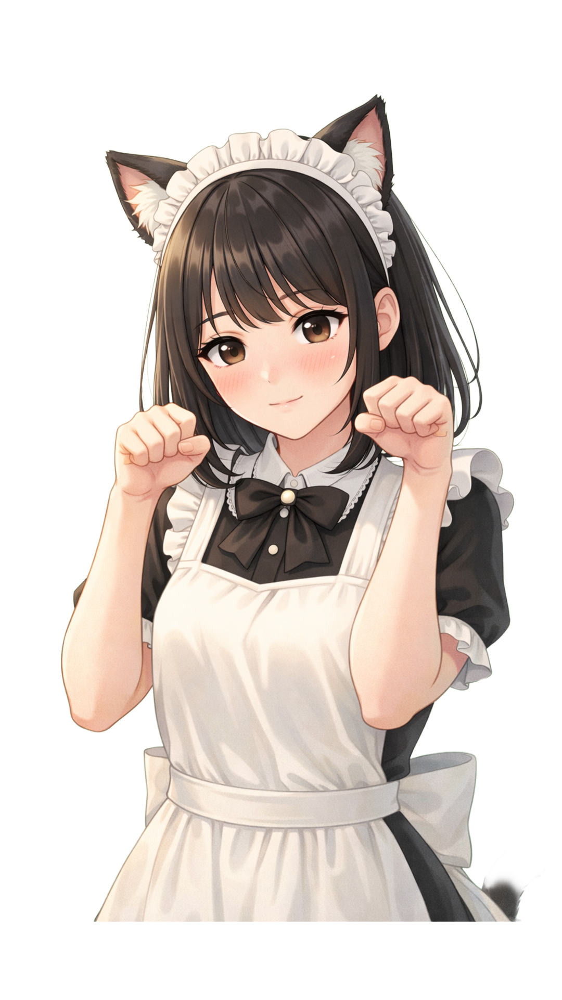
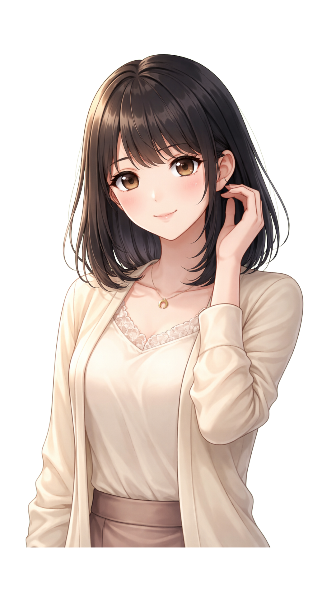

บทแปลภาษาไทยที่สวยงามและตรงบริบท


「タイ語の翻訳があるから安心だね。」
มีแปลภาษาไทยด้วย วางใจได้เลยนะ
หลายครั้งที่คนไทยท้อเพราะหนังสืออธิบายกำกวม เกมนี้เอาข้อความญี่ปุ่นมาเรียบเรียงเป็นซับไตเติลภาษาไทยด้านล่างอย่างเข้าใจง่าย
▶ ไม่มีแปลแบบหุ่นยนต์
ช่วยให้คนไทยที่เป็นมือใหม่ มองเห็นโครงสร้างประธาน กิริยา กรรม ได้ง่ายขึ้นเพียงปรายตามอง
ความเข้าถึงคนไทย
- แปลตรงตัวอักษรไม่หนีหาย
- เทียบกริยาปัจจุบัน/อดีต ให้อ่านปุ๊บรุ้ปั๊บ
- ช่วยแก้ปัญหาไวยากรณ์ในวงกว้าง
หน้าต่างโหมดเกม(Visual Novel) เข้าถึงวัยรุ่นไทย

「私と一緒に、楽しんでね！」
มาสนุกไปกับฉันนะ!
วัยรุ่นไทยเติบโตมากกับตูนและเกม เราดึงความคุ้นเคยมาใช้ในรูปแบบ Visual Novel โต้ตอบกับสาวแกลผ่านช้อยส์เลือก
▶ สร้างแพสชันผ่าน 2D
แค่กดคำตอบถูก เธอจะยิ้มแย้มให้ เป็นกลยุทธ์จิตวิทยาที่ใช้เสน่ห์ของแอนิเมชัน 2D ทำให้คนไทยเสพติดการเรียนได้ง่าย
ธีมแอนิเมชัน
- หน้าต่าง Glassmorphism ดูหรูหราเข้าตาคนไทย
- รูปสกินตัวละครออกแบบ 8 กิริยาอารมณ์
- เหมือนดูซีรีส์ซับไทยไปพลางๆ
เทรนสำเนียงฟังเพื่อคนไทย สู่ทางสว่าง Audio

「ゆっくり喋るね。聞いて。」
จะพูดช้าๆ นะ ตั้งใจฟังล่ะ
คนไทยมักติดเสียงวรรณยุกต์ การฟังเจ้าของภาษาผ่าน TTS และการพูดซ้ำ (Shadowing) จะปรับสมองให้ลืมเสียงเอกโทตรี
▶ แก้ทางเสียงคนไทย
ถ้ารู้สึกมันไวไปจนฟังไม่ทัน ระบบให้คุณปรับลดเปอร์เซ็นความเร็วออกเสียงลงได้อิสระ ซึ่งตอบโจทย์นักสู้ไทยใจเกินร้อยสุดๆ
เรทสปีดของ TTS
- เสียง API จากอุปกรณ์เป็นเสียงธรรมชาติกว่าบอทกูเกิลยุคเก่า
- พูดออโต้ตามไดอะล็อกที่รันอัตโนมัติ
- ลดความยากในการดักฟังคำช่วย は が を
มีคอร์สกิจกรรมติ่ง และการท่องเที่ยวหนีตาย (Survival)

「推しの話、たくさんしようね！」
มาคุยเรื่องเมนกันเยอะๆ เถอะนะ!
คนไทยส่วนใหญ่เรียนเพื่อไปตามติ่งดาราไอดอล และท่องเที่ยว เกมจึงมีคอร์ส Oshikatsu เสริมสแลงวงการติ่งแบบจัดเต็ม
▶ จุดประสงค์เรียนยอดฮิต
บวกกับ 50 ประโยคเอาตัวรอด การซื้อยา การนัดหมายร้านอาหาร เพื่อให้คุณมีไม้ตายไว้ใช้ตอนได้ตั๋วโปรโมชันบินไปโตเกียว
คอร์ส Oshikatsu
- คอร์สท่องเที่ยว Medical / Travel
- คอร์สโอตาคุและ X ทวิตเตอร์
- ฟรีสำหรับคนไทยที่ขี้เกียจจับหนังสือ
ระบบเช็คคะแนนตัวเอง ไม่แกรนด์โอเพนนิงชิงดีชิงเด่น

「間違えても大丈夫だよ。」
ผิดบ้างก็ไม่เป็นไรหรอกนะ
คนไทยบางส่วนขี้อายไม่กล้าประชันคะแนน เราให้คุณแข่งขันกับตัวเอง เก็บความผิดพลาดและคะแนน 10/10 ไว้ในมือถือคุณเอง
▶ ขี้อายก็เก่งได้
ไม่มี Leaderboard มาบดขยี้จิตใจ คุณผิด คุณกดเรียนยูนิตเดิมเพื่อรับคะแนนใหม่ สานฝันสร้างความมั่นใจได้อย่างแท้จริง
Local Score Local Storage
- จำฐานข้อมูลได้แม่นยำด้วยออฟไลน์สคริปต์
- โชว์ถ้วย Perfect ในหน้าแรกของเกมล่อตาล่อใจ
- กล้าผิด กล้าแก้ ได้ความรู้